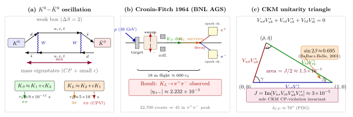

CP 破缺 — KAON 系统给我们看到了什么?
有没有办法只凭一台实验和一堆逻辑, 远程告诉一个生活在另一个星系的文明 —— 哪个方向是"左手", 哪边是"正电荷"? 1956 年宇称 P 被发现破坏后, 物理学家曾经有过一个优雅的避险: 单个 P 破缺虽然把"左右" 不对称了, 但如果同时把粒子换成反粒子 (C 变换), 对称性就回来了, 这叫 CP 对称. 也就是说, 把一个世界"镜像 + 全粒子换反粒子" 之后, 所有物理规律保持不变. 在这套框架里, 告诉外星人"左手" 和"正电荷" 必须一起指定, 否则两个信息都不能独立传递. CP 看上去是物理定律的一条基石.
但 1964 年, 这块基石被敲开了一道 $2.2\times 10^{-3}$ 的裂缝 —— 非常细小, 却意味着 CP 也不是精确对称. 这个发现出现在一个当时看起来完全"无关" 的系统: 中性 K 介子. 一个由轻质量的 $d$ 和 $s$ 夸克构成的介子, 凭自己的内禀振荡现象把对称性破缺这件事摆在眼前. 这一节我们就来一步步看清: K 介子为什么会振荡、为什么能诊断 CP、以及为什么这种破缺的存在反过来强迫标准模型必须有至少三代夸克. 这也是本书对"cliché 概念" deepdive 的那一节 —— 我们会把 CKM 矩阵的物理相位为什么"不能用夸克场相位重新定义消掉" 这件反复被引用的事, 一步不跳地数一遍.
一、中性 K 介子的身份困惑与 CP 本征态
先把物体摆出来. $K^0 = d\bar s$ 带奇异数 $S = +1$, 它的反粒子 $\bar K^0 = \bar d s$ 带 $S = -1$. 这两个态是强相互作用的本征态 —— 强相互作用保持味 (奇异数守恒), 所以 $K^0$ 和 $\bar K^0$ 是按强产生的独立粒子. 但弱相互作用不守恒奇异数 ($\Delta S = \pm 1$ 在 $W$ 耦合中直接出现), 更糟的是, 二阶弱相互作用允许 $K^0 \leftrightarrow \bar K^0$ 的转化 (交换两个 $W$ 即可, 对应所谓 box 图), 这样 $K^0$ 和 $\bar K^0$ 在自由演化下会互相混合.
现在作用 CP 算符. C 把粒子换反粒子, P 把空间反演. 对静止的自旋为 0 的 K 介子, P 只需要提供一个本征值 (实验测出是 $-1$); 关键是 C 把 $K^0$ 换成 $\bar K^0$, 所以
$$ \mathrm{CP}\,|K^0\rangle = -|\bar K^0\rangle, \qquad \mathrm{CP}\,|\bar K^0\rangle = -|K^0\rangle, $$
相位约定取到这里带一个 $-$ 号 (跟惯用的 $\eta_{CP} = -1$ 一致). CP 把 $K^0$ 和 $\bar K^0$ 对换, 所以两者在 CP 下都不是本征态. 但它们的两个组合
$$ |K_1\rangle = \frac{1}{\sqrt 2}\big(|K^0\rangle - |\bar K^0\rangle\big), \qquad |K_2\rangle = \frac{1}{\sqrt 2}\big(|K^0\rangle + |\bar K^0\rangle\big) $$
却分别是 CP 本征值 $+1$ 和 $-1$ 的本征态 (验算: $\mathrm{CP}\,|K_1\rangle = (-|\bar K^0\rangle + |K^0\rangle)/\sqrt 2 = +|K_1\rangle$, 同理 $\mathrm{CP}\,|K_2\rangle = -|K_2\rangle$).
再看末态 CP. 两个 $\pi$ 的零自旋组合 ($\pi^+\pi^-$ 或 $\pi^0\pi^0$ 在 $L=0$ 下) 有 $\mathrm{CP} = +1$; 三个 $\pi$ 的组合 $\mathrm{CP} = -1$ (多一个宇称 $-1$ 的伪标量). 如果 CP 严格守恒, 那么
- $K_1$ (CP=+1) 只能衰变到 $\pi\pi$ (CP=+1), 走这条道;
- $K_2$ (CP=-1) 只能衰变到 $\pi\pi\pi$ (CP=-1), 不能走 $\pi\pi$.
量子力学给出的直接预测: 两个态寿命差别巨大. $K_1 \to \pi\pi$ 末态空间大, 衰变快; $K_2 \to \pi\pi\pi$ 末态动能狭窄 ($m_K - 3m_\pi \approx 90\,\mathrm{MeV}$), 相空间受压, 衰变慢. 实验测得
$$ \tau_{K_S} \approx 8.95\times 10^{-11}\,\mathrm s, \qquad \tau_{K_L} \approx 5.12\times 10^{-8}\,\mathrm s, $$
寿命比约 580 倍. $S$ = "short", $L$ = "long". 在 CP 精确的世界里, $K_S$ 就是 $K_1$, $K_L$ 就是 $K_2$.
一个直接的预测: 给定一束 $K^0$ (比如质子-质子碰撞产生), 初始是 $|K^0\rangle = (|K_1\rangle + |K_2\rangle)/\sqrt 2$ (把上面的 $K_1, K_2$ 反解即可). 两个成分以不同的寿命衰变, 短寿命的 $K_S$ 会在几厘米的飞行长度内几乎全部衰变掉 (飞行距离 $\beta c \tau_S \sim 3\,\mathrm{cm}$), 之后留下的是"纯" $K_L$ 束. 如果 CP 守恒, 这束纯 $K_L$ 绝对不能衰变到两个 $\pi$. 这是一个干净得不能再干净的判决性预测. Cronin 和 Fitch 就是去做这个测量的.
二、CKM 相位为什么不能被重定义掉 (cliché 的严格 deepdive)
在进入实验之前, 我们先把这一节要偿的那一笔 deepdive 付清 —— 这也是后面所有数字的理论骨架. 常被引用的一句话是:" $N$ 代夸克的 CKM 矩阵中有 $(N-1)(N-2)/2$ 个不可消除的 CP 相位; 两代 0 个, 三代 1 个, 所以 Kobayashi-Maskawa 在 1973 年靠这一条预言了第三代." 下面我们把每一步都严格数清楚, 不跳.
标准模型的夸克味变来自弱相互作用的带电流顶点 $\bar u_L \gamma^\mu d_L\,W_\mu^+$. 但"夸克" 有两种意义: 一种是质量本征态 ($u, c, t$ 上类; $d, s, b$ 下类), 另一种是弱相互作用本征态 ($u', c', t'$; $d', s', b'$). 两者之间差一个酉变换 —— 这正是 CKM 矩阵 $V$ 的定义
$$ \begin{pmatrix} d' \\ s' \\ b' \end{pmatrix} = V \begin{pmatrix} d \\ s \\ b \end{pmatrix}, \qquad V^\dagger V = \mathbf 1. \tag{1} $$
对 $N$ 代夸克, $V$ 是 $N\times N$ 的酉矩阵. 我们来数它的自由参数.
Step 1: 酉矩阵的总参数数. $N\times N$ 复矩阵有 $2N^2$ 个实参数. 酉条件 $V^\dagger V = \mathbf 1$ 是 $N^2$ 个实约束 (对角 $N$ 个条件实数, 非对角 $N(N-1)/2$ 对复共轭条件, 各 2 个实数 = $N(N-1)$, 总共 $N + N(N-1) = N^2$). 所以 $V$ 的独立实参数 = $2N^2 - N^2 = N^2$.
Step 2: 角度和相位的分拆. 一个实的正交矩阵 $O(N)$ 有 $N(N-1)/2$ 个独立角度. $U(N)$ 比 $O(N)$ 多的那些参数就是相位类. 所以 $N^2 = N(N-1)/2 + [\text{剩下的相位数}]$, 即相位总数 = $N^2 - N(N-1)/2 = N(N+1)/2$.
Step 3: 夸克场相位重定义能吸收多少. 物理上, 每个夸克场都有一个整体相位自由: $u_i \to e^{i\phi_{u,i}}u_i$, $d_j \to e^{i\phi_{d,j}}d_j$ 不改变任何可观测 (因为拉氏量里的每一项都含一个场和一个共轭场, 两个相位相减). 这些相位吸进 $V$ 里: $V_{ij} \to e^{-i\phi_{u,i}}V_{ij}e^{i\phi_{d,j}}$. $2N$ 个独立相位乍看可以消掉 $2N$ 个, 但其中有一个组合 "$\phi_{u,i} = \phi_{d,j} = \phi_0$ 同步旋转所有夸克" 是重子数 $U(1)_B$ 的全局对称, 它作用在 $V$ 上就是恒等 (每一项都被乘 $e^{-i\phi_0}e^{i\phi_0} = 1$). 所以真正能用来消去 $V$ 中相位的独立夸克相位是 $2N - 1$.
Step 4: 剩下来的不可消除相位. 把第二步的相位总数减去第三步的吸收量
$$ n_{\text{phase}} = \frac{N(N+1)}{2} - (2N-1) = \frac{N(N+1) - 4N + 2}{2} = \frac{N^2 - 3N + 2}{2} = \frac{(N-1)(N-2)}{2}. \tag{2} $$
角度数同样可以验: $n_{\text{angle}} = N(N-1)/2$. 合计 $n_{\text{angle}} + n_{\text{phase}} + (2N-1) = N^2$, 和 Step 1 吻合.
代入具体的 $N$:
- $N=1$: 0 个角度, 0 个相位. 一代就一个数, $V = 1$, 没什么可说.
- $N=2$: 1 个角度 (Cabibbo 角 $\theta_C \approx 13^\circ$), 0 个相位. 两代没有 CP 破缺的自由度.
- $N=3$: 3 个角度, 1 个相位 $\delta_{CP}$. 这就是 Kobayashi-Maskawa 矩阵的参数结构.
- $N=4$: 6 个角度, 3 个相位 —— 只会更复杂.
重点是 $N=2 \to N=3$ 的相变: 只有两代夸克时, 任何 $2\times 2$ 酉矩阵都可以用四个夸克的相位重定义化成一个实的旋转矩阵 (Cabibbo 旋转); 没有剩下的相位, 就没有 CP 破缺的源头. 三代起相位数从 0 跳到 1, 第一次打开了 CP 破缺的动力学通道. 1973 年 Kobayashi 和 Maskawa 反过来用这个推理: 既然实验在 K 介子系统已经看到了 CP 破缺 ($\eta_{+-} \approx 2\times 10^{-3}$, 1964 年起), 而标准模型里唯一可能的相位源头是 CKM 矩阵, 那么夸克代数必须 $\ge 3$. 那时只知道 $u, d, s$ 三种夸克 ($c$ 要一年后 1974 十一月革命才发现, $b$ 要到 1977), 他们纯靠参数数数预言了第四、第五、第六种夸克的存在. 三十五年后 (Nobel 2008) 才兑现这笔账, 但账一直在原处.
附一个常用的参数化 (PDG 标准):
$$ V = \begin{pmatrix} c_{12}c_{13} & s_{12}c_{13} & s_{13}e^{-i\delta} \\ -s_{12}c_{23} - c_{12}s_{23}s_{13}e^{i\delta} & c_{12}c_{23} - s_{12}s_{23}s_{13}e^{i\delta} & s_{23}c_{13} \\ s_{12}s_{23} - c_{12}c_{23}s_{13}e^{i\delta} & -c_{12}s_{23} - s_{12}c_{23}s_{13}e^{i\delta} & c_{23}c_{13} \end{pmatrix}, $$
其中 $s_{ij} = \sin\theta_{ij}$, $c_{ij} = \cos\theta_{ij}$, 实验值 $\theta_{12} \approx 13^\circ$ (Cabibbo), $\theta_{23} \approx 2.4^\circ$, $\theta_{13} \approx 0.2^\circ$, $\delta \approx 70^\circ$. 相位 $\delta$ 仅出现在和 $s_{13}$ (最小的混合角) 相乘的位置, 所以实际上 CP 破缺效应总是小数 $\times$ 小数的乘积, 自然量级就很小.
定量地, 所有具体 CP 破缺观察量都可以写成一个普适量 —— Jarlskog 不变量 $J$ —— 乘一些排列特定组合. Jarlskog 在 1985 给出了这个参数化无关的形式
$$ J = \mathrm{Im}\,[V_{us}V_{cb}V_{ub}^*V_{cs}^*] = c_{12}c_{13}^2 c_{23}\,s_{12}s_{13}s_{23}\,\sin\delta. $$
代数值: $c_{12}c_{13}^2 c_{23} \approx 0.97\cdot 1\cdot 1 \approx 0.97$, $s_{12}s_{13}s_{23} \approx 0.225\cdot 0.0035\cdot 0.042 \approx 3.3\times 10^{-5}$, $\sin\delta \approx 0.94$. 乘起来 $J \approx 3\times 10^{-5}$. 这个"很小" 是 CP 破缺效应普遍小 (K 系统 $\sim 10^{-3}$, 而不是 $\mathcal O(1)$) 的唯一根源.

三、Cronin-Fitch 实验与 K 介子 CP 破缺的量化
1964 年 James Cronin, Val Fitch 及他们的合作者在 Brookhaven 的 AGS 加速器上做了一个原本目的"只是验证 CP 守恒精度到 $10^{-3}$" 的对照实验. 设计很直接: 用 30 GeV 质子打靶产生混合的 $K^0 / \bar K^0$ 束流, 让束流自由飞行 18 米 (约 $60\,\mathrm{ns}$, 是 $\tau_S \sim 10^{-10}\,\mathrm s$ 的 600 倍, 所以 $K_S$ 早就衰变殆尽), 在末端用两条闪烁室臂测量飞出末态粒子的四动量, 重建不变质量.
如果 CP 守恒, 在远端看到的"纯 $K_L$" 只能衰变到 $\pi\pi\pi$ 或 $\pi l \nu$ 这些 CP = $-1$ 或非 CP 本征的末态, 绝对看不到 $\pi^+\pi^-$ (两体, 不变质量落在 $m_K \approx 498\,\mathrm{MeV}$ 处, 容易识别). 实验运行几个月, 累计 $22\,700$ 次 $K_L$ 衰变事件, 其中 $45$ 个事件落在 $\pi^+\pi^-$ 的不变质量峰上 —— 小, 但明显在本底之上. 概率
$$ \mathrm{Br}(K_L \to \pi^+\pi^-) \approx \frac{45}{22\,700} \approx 2\times 10^{-3}. $$
这里定义一个关键的复参数
$$ \eta_{+-} \equiv \frac{\mathcal A(K_L \to \pi^+\pi^-)}{\mathcal A(K_S \to \pi^+\pi^-)}, \qquad |\eta_{+-}| \approx 2.232\times 10^{-3}. \tag{3} $$
现代测量值 (KTeV, NA48) 更精确地给到 $|\eta_{+-}| = (2.232 \pm 0.011)\times 10^{-3}$, 相位 $\phi_{+-} \approx 43.5^\circ$. 物理解读是: 实际的 $K_L$ 不是纯 $K_2$, 而是带一点 $K_1$ 的混合
$$ |K_L\rangle = \frac{1}{\sqrt{1+|\epsilon|^2}}\big(|K_2\rangle + \epsilon\,|K_1\rangle\big), \qquad |\epsilon| \approx 2.2\times 10^{-3}. $$
这个 $\epsilon$ 测量的是质量本征态 $K_L, K_S$ 相对于 CP 本征态 $K_2, K_1$ 的偏离, 叫"间接 CP 破缺" (indirect, 来自混合本身). 后来 NA31/NA48 和 KTeV 又测到另一个小得多的参数 $\epsilon'/\epsilon \approx 1.7\times 10^{-3}$, 表示"直接" CP 破缺 —— 衰变振幅 $A(K \to \pi\pi)$ 本身的 CP 不对称, 更直接地诊断到 CKM 相位, 1999 年才被正式确认.
把 (3) 和 CKM 联系起来需要用 box 图计算 $K^0$-$\bar K^0$ 混合, 主要贡献来自内部 charm 和 top 夸克; 结果 $\epsilon$ 正比于 $\mathrm{Im}\,[(V_{ts}^*V_{td})^2]$ 乘上 Inami-Lim 函数, 量级估计 $\epsilon \sim G_F^2 m_W^2 f_K^2 B_K m_K / 12\pi^2 \cdot \mathrm{Im}(V_{ts}^*V_{td})^2$. 代入 $f_K \approx 160\,\mathrm{MeV}$, $B_K \approx 0.76$ 和 $\mathrm{Im}(V_{ts}^*V_{td})^2 \sim A^4\lambda^{10}\bar\eta \sim 10^{-7}$ (Wolfenstein 参数化), 数值上正好得到 $|\epsilon| \sim 10^{-3}$ —— 标准模型的一致性检验在这里给出了 $\mathcal O(1)$ 的吻合.
再举一个现代高精度的对照. B 介子工厂 BaBar (SLAC) 和 Belle (KEK) 在 2001 年同时宣布: 在 $B^0 \to J/\psi K_S$ 末态里观察到时间相关的 CP 不对称, 其振幅
$$ A_{CP}(t) = \sin(2\beta)\,\sin(\Delta m_B\,t), \qquad \sin 2\beta \approx 0.695. $$
$\sin 2\beta$ 不是小量 —— 大约 $0.7$, 对应 CKM unitarity 三角形的一个内角 $\beta \approx 22^\circ$. 这和 K 系统 $\eta_{+-} \sim 10^{-3}$ 的"看起来小" 是不同起源: 在 B 介子里 CKM 元素的组合处于 $\mathcal O(1)$ 量级, 相位 $\delta$ 没有被压低, 所以裸露的相位本身就直接出现. K 系统则因为 $s \to d$ 跃迁被双重压制 ($\lambda \sim 0.22$ 的两次幂), 才看起来小. 两个数字 —— $|\eta_{+-}| = 2.2\times 10^{-3}$ 和 $\sin 2\beta \approx 0.7$ —— 都指向同一个 CKM 相位 $\delta \approx 70^\circ$, 这是标准模型最非平凡的一致性检验之一.
四、两代极限、历史里程碑与物质不对称
上面的数数告诉我们: 两代夸克时 $V_{CKM}$ 是 $2\times 2$ 酉矩阵, 4 个参数 = 1 个角度 (Cabibbo) + 3 个相位; $2N-1 = 3$ 个夸克相位正好可以吸收全部 3 个矩阵相位, 剩一个实角度. 在两代世界里 CP 是自动精确的 —— 你想手工破坏都没自由度可破. 当年 Glashow-Iliopoulos-Maiani 1970 引入 charm 夸克 (GIM 机制) 的时候, 他们还只是把两代补全, 没有猜过第三代. Kobayashi 和 Maskawa 1973 年用的推理倒过来: 既然 K 系统的 CP 破缺已经是事实, 而我们能想象的 SM 层面 CP 破缺源头只有 CKM 相位 (Higgs 出现更早之前, 也有讨论把相位放在 Higgs 部门, 但实验排除), 那就必须有第三代. 当时他们甚至考虑过相位放在右手流里, 放在 Higgs 里等等其它方案, 最后通过排除法落在"三代" 上. 1974 $J/\psi$ 发现给出 $c$, 1977 $\Upsilon$ 给出 $b$, 1995 CDF/D0 给出 $t$, 三代全齐 —— 每次都和 KM 的相位账本对得上.
让我们再把两个尺度数字摆齐. K 介子系统中 $K_L$ 寿命 $\tau_L \approx 5.12\times 10^{-8}\,\mathrm s$, 飞行距离 $\beta c\tau_L \approx 15\,\mathrm{m}$ (对 $\gamma \sim 1$ 的慢束); CP 破缺概率 $2\times 10^{-3}$, 所以要看到一个"禁戒" 的 $K_L \to \pi\pi$, 平均得等 500 次 $K_L$ 衰变, 一束 $10^9\,\mathrm{s^{-1}}$ 的束流一天就能产生上百万例 —— 这就是为什么 1964 年的 1 米桌面实验能在几个月内收到 45 个关键事件. 相比之下, Jarlskog 不变量 $J \approx 3\times 10^{-5}$ 看起来比 $|\eta_{+-}|$ 更小, 但这是因为 $J$ 把所有"压低因子" 都收拢到了一起 (三个小混合角 + 一个 sin); 实际观测到的 CP 不对称是 $J$ 除以相关的味变组合, 各个系统里表现出来的大小不同.
接下来 CP 破缺的故事沿三条线扩散:
- B 介子系统: BaBar + Belle 2001 宣布 $\sin 2\beta \approx 0.7$, LHCb 现在把 CKM 的每个角都测到 $\mathcal O(1\%)$ 精度, 所有数据和单一相位 $\delta \approx 70^\circ$ 一致, 标准模型到目前为止抗住了检验.
- D 介子和 charm 部门: LHCb 2019 年首次观测到 $D^0 \to K^+K^-, \pi^+\pi^-$ 中的直接 CP 破缺, $\Delta A_{CP} \approx 1.5\times 10^{-3}$, 和 SM 预言在 $2\sigma$ 内一致 (但理论不确定性大).
- 中微子振荡: T2K (Japan) 和 NOvA (US) 在 2020 年联合给出了轻子部门 CP 相位 $\delta_{CP}^{\text{lepton}}$ 的 $1\sigma$ 偏好值, 集中在 $-\pi/2$ 附近, 暗示中微子振荡里存在大 CP 破缺 —— 如果证实, 这将是远超 CKM 的效应, 且与宇宙重子不对称 (leptogenesis 情景) 直接相关. DUNE (美国) 和 Hyper-Kamiokande (日本) 下一代实验目标就是给出 $5\sigma$ 确认.
后面这条最有戏剧性, 因为 Sakharov 1967 指出过: 要在大爆炸的对称初始条件里演化出"粒子多于反粒子" 的不对称 (我们正好生活在这个不对称里, 重子-光子比 $\eta_B \approx 6\times 10^{-10}$), 至少需要三条件 —— 重子数破坏 + C/CP 破坏 + 非热平衡. CKM 相位提供的 CP 破缺量 (用 Jarlskog 不变量作度量, $J \sim 10^{-5}$) 只够制造 $\eta_B \sim 10^{-20}$, 比观察值小 10 个量级. 所以宇宙的重子不对称必须靠 CKM 之外的新物理 —— 要么中微子部门的 leptogenesis (需要 Majorana 中微子 + 大 CP 相位), 要么某个更高能标的 BSM 源头. 1964 年 Cronin-Fitch 在一束 K 介子里撬开的那条 $2.2\times 10^{-3}$ 缝, 到今天成了解读物质-反物质不对称的第一个钥匙孔.
历史版面: Cronin-Fitch 1964 年 9 月 18 日提交 PRL, 标题 "Evidence for the $2\pi$ Decay of the $K_2^0$ Meson". 1980 年 Nobel Physics 授予二人, 引文直接写"对中性 K 介子衰变中 CP 破缺的发现". Kobayashi 和 Maskawa 1973 年 2 月发表日本的 Progress of Theoretical Physics, 英文标题 "CP-Violation in the Renormalizable Theory of Weak Interaction", 论文短短 5 页, 没有 abstract (1973 年那本杂志还不要求). 2008 年 Nobel Physics 一半给 Nambu (自发破缺), 另一半 Kobayashi + Maskawa 共享. 2001 年 BaBar + Belle 同时宣布 B 介子 CP 不对称, 2015 年 LHCb 首次观测 $B_s$ 混合 CP 相位, 2019 D 介子 CP 破缺, 2020 T2K 中微子 CP 初露痕迹, 故事还在继续写. 每一次新一级的 CP 观察都拿来检验 SM 三代四参数结构能不能装得下, 到目前为止全装得下.
小结
这一节我们把"CP 破缺" 从一个名词, 推到了一个由 $2.2\times 10^{-3}$ 这个具体数字锚定的现象, 再推到了一个由 $(N-1)(N-2)/2$ 这个相位计数公式强制的理论结构. 1964 Cronin-Fitch 实验的意义不只是"发现对称破缺", 更是它以不可逆的方式告诉我们: 标准模型必须有至少三代夸克 —— 这件事在 1973 年被 Kobayashi 和 Maskawa 用一个数数论证当真理念下了赌注, 并在三十年内由 $c, b, t$ 的相继发现 + B 工厂数据全面兑付. 一个 $|\eta_{+-}| \sim 10^{-3}$ 的小数, 对应 CKM 矩阵中一个 $\delta \approx 70^\circ$ 的大相位 —— 效应小不是因为物理机制弱, 而是因为味混合角被压低. 但 CKM 提供的 CP 破缺量不足以解释宇宙重子不对称, 我们需要中微子部门的大相位 (下一节的中微子振荡里, 就会遇到一个新的 PMNS 矩阵, 和 CKM 结构一模一样, 但数值上相位可能大得多) 或者更高能标的 BSM 源头. CP 破缺从 K 介子的一个小实验起步, 走到宇宙学的中心位置 —— 这正是基本对称性一旦破缺就能在多个尺度上同时下雨的典型例子.
▲